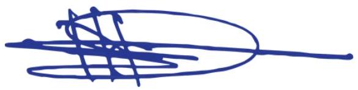

Preliminaries
Ministry of Health Kenya
NATIONAL GUIDELINES ON QUALITY OBSTETRICS AND PERINATAL CARE
FEBRUARY, 2022
REPUBLIC OF KENYA
MINISTRY OF HEALTH
NATIONAL GUIDELINES ON QUALITY OBSTETRICS AND PERINATAL CARE
February 2022
Division of Reproductive and Maternal Health, Department of Family Health, Ministry of Health Afya House, Cathedral Road, P.O. Box 30016-00100, Nairobi - Kenya.
Citation:
Ministry of Health 2022: National guidelines on quality obstetrics and perinatal care, February 2022.
Contact:
Department of Family Health, Division of Reproductive and Maternal Health, Ministry of Health, Nairobi Kenya.
ACKNOWLEDGEMENT
The review and revision of the National Guidelines for Quality Obstetrics and Perinatal Care (2022) involved in-depth consultations with a wide range of multidisciplinary stakeholders including highly specialized and experienced personalities through literature review, interviews, consultative meetings and reviews of the various drafts of the guidelines.
We wish to thank Dr. Dr Kihara A.B., Obstetrician and Gynecologist, University of Nairobi, the lead consultant to this process who together with Dr. Gondi J.O former Head, RMHSU, Dr. Wangui Muthigani former Program Manager Maternal New-born Health and former Head Division of Family Health, Dr. Sheikh Mohamed, initiated and gave valuable inputs and support to the review and revision process.
The Ministry of Health feels greatly indebted to the Division of Reproductive and Maternal Health for leading the Technical Working Group and steering the consultations both at the National and County levels to develop these guidelines. Specifically, the Ministry would like to thank Dr. Bashir Issak, Head, Department of Family Health, Dr. Kaliti Stephen, Head, Division of Reproductive and Maternal Health, Dr. Gitonga James, Dr. Laura Oyiengo, Dr. Jeanne Patrick, Dr. Caroline Wachu Mwangi, Dr. Albert Ndwiga, Dr. Jonah Maina, Merina Lekorere, Scolastica Wabwire, Mary Gathitu, Clarice Okumu, Karen Aura, Elizabeth Washika, Hellen Mutsi, Dr. Daisy Ruto, Prof. Zahida Qureshi, Prof. Omondi Ogutu, Dr. Justus Ngatia, Dr. Florence Murila, Dr. Khadija Abdalla, Dr. Gathari Ndirangu, Dr. Philip Kirwa, Dr. Phineas Ahoya and the Delphi Technique Team (External Reviewers).
We also acknowledge Kenya Obstetric and Gynaecology Society (KOGS), Kenya Paediatric Association (KPA), JHPIEGO, UNICEF, LSTM, NASCOP, MSH, OPTIONS, WHO, UNFPA PATH, Save the Children, Palladium, University of Nairobi, FHI360, Moi Teaching and Referral Hospital, KMTC, Nursing Council of Kenya, Kenya Midwives Association of Kenya, Kenya Clinical Officers Association, Kenyatta University Teaching, Referral and Research Hospital, Daystar University, Pumwani Hospital, Mama Lucy Kibaki Hospital, Garissa County Referral Hospital, Margaret Kenyatta Hospital, County Health Management Team Representatives from various Counties and all individuals who participated in the review of this guidelines your contributions are highly appreciated.
A special mention goes to the editorial team that comprised of Dr. Jeanne Patrick, Dr. Gitonga James, Merina Lekorere, Scolastica Wabwire (Obstetric Component), Dr. Caroline Wachu Mwangi and Allan Govoga (Newborn care component), Esther Mogusu and Mary Kimani (Nutrition component).
Lastly, we acknowledge Global Fund through NASCOP and JHPIEGO for their technical and financial support to the review process.
Dr. Mulwa A. M,
Director of Medical Services, Preventive & Promotive Health
FOREWORD
The Health Policy Framework (2014-2030) goal is to offer the highest attainable standard of health and be responsive to the needs of the Kenyan citizens. Kenya has made remarkable progress in improving maternal and newborn health outcomes. According to the 2014 Kenya Demographic and Health Survey (KDHS) report, Maternal and Newborn health indicators had improved compared to the KDHS 2008-9 report. Maternal Mortality Ratio (MMR) reduced from 448 to 362/100,000 live births while Neonatal Mortality Rate reduced from 31 to 22/1000 live births over the last decade. However, more needs to be done as many women and neonates continue to suffer or die from conditions, which are preventable or treatable.
Improving quality of Maternal and Newborn Health services is a priority for the Government of Kenya. Quality of care employs evidence based best practices and provision of actionable interventions with appropriate and timely referral of patients.
The review of this guideline is in response to the need for emerging, updated evidence-based interventions that have proved successful when applied throughout the continuum of care of the woman's preconception, pregnancy, childbirth and the postpartum period. This National guidelines on Quality Obstetrics and Perinatal care standardizes evidence best practices, informs policy and advocacy in maternal, neonatal and new-born health for individual and societal healthier outcomes in Kenya. Both obstetric and neonatal conditions and the complications that would affect a mother and her newborn during this period have extensively been described along with their management. This guidelines aim is to have a healthy and well mother-baby dyad that survives, thrives and transforms having been provided with a satisfactory pregnancy, childbirth and beyond that ultimately impacts gainfully to be productive Kenyan citizenry contributing to our development agenda.
The target population for this guideline include National and County duty bearers, health policy makers, Regulators and Administrators, Obstetricians and Gynaecologists, Paediatricians, Researchers, Academia, Clinical officers, Midwives, Nurses and those in-pre-service training. The use of this guidelines as a reference manual is highly recommended in order to ensure provision of standard quality Maternal and Newborn Health services at all levels of the Kenya Health System.
It is my sincere hope that this document which is designed to provide a practical guide and equip health care providers with maternal and newborn health knowledge, skills and positive attitudes at all levels of service delivery implementation will go a long way in accelerating the reduction of maternal and newborn morbidity and mortality and get the country on track to Vision 2030 and the Sustainable Development Goals.
Dr. Patrick Amoth, EBS
Director General for Health
PREFACE
The Kenya Constitution and Health Policy Framework (2014-2030) goal is to offer the highest attainable standard of health and be responsive to the needs of the Kenyan populace. Quality of care employs evidence based best practices; provision of actionable interventions with appropriate and timely referral of patients. In the quality-of-care framework KQMH recognizes that patient experience critical to be universally accessible; provides dignified and respectful care with effective communication on a bedrock of a supportive health-care system and as a basic human right. This National guideline on Quality Obstetrics and Perinatal Care standardizes evidence best practices, informs policy and advocacy in maternal, neonatal and new-born health for individual and societal healthier outcomes in Kenya.
This guideline addresses provision of evidence based best practices in obstetrics and perinatal health addressing in every topic: definition, epidemiology, prevention, screening, diagnosis and management in the continuum of care. This continuum in maternal and perinatal care includes: preconception, antepartum, intrapartum and postpartum care related complications that can coexist or develop in the course of follow up. The perinatal health principally includes fetal surveillance in utero; during childbirth and in the immediate new-born period for the first 7 days of life. This guidelines outcome is to have a healthy and well mother- baby dyad to thrive having been provided with a satisfactory pregnancy, childbirth and beyond that ultimately impacts gainfully to be productive Kenyan citizenry contributing to our development agenda.
The target population for this guideline include National and County duty bearers, health policy makers, regulators and administrators; Consultant Obstetricians and Gynaecologists, Consultant Paediatricians, researchers, academia, clinical officers, midwives and nurses, auxiliary service providers and those in-pre- service training working in maternity and new-born Health- care.
At the initiation phase of development of this guideline a county mixed method survey (51% coverage) was conducted amongst implementers, Focus group discussions and key informants. The survey revealed the need for a robust implementation plan to address guideline distribution, capacity building, facilitative supervision, monitoring and evaluation. This was followed by Phase two - scoping and literature review identified evidence gaps and new topic areas such as: nutrition, pre-conceptual care, intrapartum fetal surveillance, dysfunctional labour, caesarean section, FGM and childbirth, maternal mental health, maternal shock, near miss and MPDSR. In the neonatal section, updates were made. Newer methods of the management of respiratory distress like CPAP, surfactant and mechanical ventilation have been included. Parenteral nutrition and hypothermic therapy for asphyxia have also been added as these are important methods of management available in the country.
In each topic an outline of clinical questions covered the following: definition, Intervention(s) or exposure(s); comparison of interventions or therapies where appropriate; outcome(s) and related to the Country and County context with level of care, the health system; the cost implication and cultural acceptability.
Methodology used in the development of the guideline
Guideline review commenced with desk review and scoping of the existent National guideline of Obstetrics and Perinatal care of 2012 that informed the topic requirements. The search per topic commenced with a defined health question, search for guidelines guided by the Geneva Foundation of medical education and research www.gfmer.org. The ADAPTE process which used Agree II tool informed selection for in-depth review and critique. Only guidelines that attained an aggregate score of 70% and above were used in the adapted revised draft for both Obstetric and perinatal care. Further review of this synthesized guideline was made by stakeholders drawn from policy makers, professionals, academia, researchers, implementer of services and the community conducted at two technical workshops. The developed second draft was then subjected to external review using the Delphi technique before the final edition of the guideline and validation meeting.
Recommendations in the guideline are based on the evidence level as indicated below:
Classification of evidence level
- I++ High quality met- analyses, systematic reviews of RCT or RCT with very low risk of bias
- + Well conducted met-analyses, systematic reviews of RCT or RCT with low risk of bias
- I- Met- analyses, systematic reviews of RCT or RCT with a high risk of bias
- 2++ High quality systematic reviews of case- control or cohort studies or high quality case - control or cohort studies with a very low risk of confounding, bias or chance and a high probability that the relationship is causal
- 2+ Well conducted case - control or cohort studies with a low risk of confounding, bias or chance and a moderate probability that the relationship is causal
- 2- Case - control or cohort studies with a high risk of confounding, bias or chance and a significant risk that the relationship is not causal
- 3 Non - analytic studies e.g. case reports, case series
- 4 Expert opinion
Grades of recommendations
- A At least one met- analysis, systematic reviews or RCT rated as I++ and directly applicable to the target population; or a systematic review of RCT or a body of evidence consisting principally of studies rated I+, directly applicable to the target population and demonstrating overall consistency of results
- B A body of evidence including studies rated as 2++ directly applicable to the target population and demonstrating overall consistency of results; or extrapolated evidence from studies rated as I++ or I+
- C A body of evidence including studies rated as 2+ directly applicable to the target population and demonstrating overall consistency of results; or extrapolated evidence from studies rated as 2++
- D Evidence level 3 or 4; or extrapolated evidence from studies rated as 2+
- ✓ Good practice
The guideline can be used by duty bearers, donors, policy makers, academia, researchers, professionals and implementers of services at the national and county levels. It further informs curriculum review; standard operating procedures and protocols; the essential drug lists; future research areas, policy and advocacy in maternal and perinatal healthcare.
ABBREVIATIONS
| ACOG: | American College of Obstetrics and Gynecology |
| AI: | Adequate Intake |
| APH: | Antepartum Hemorrhage |
| ARV: | AntiRetroViral |
| AVPU: | Alertness; Verbal Response; Pulse; Unresponsive |
| AIDS: | Acquired Immuno-Deficiency Syndrome |
| ANC: | Antenatal care |
| BLS: | Basic Life support |
| BMI: | Body Mass Index |
| CS: | Cesarean Section |
| EAR: | Estimated Average Requirement |
| FANC: | Focused Antenatal Care |
| FIGO: | International Federation of Gynecology and Obstetrics |
| FMS: | Free Maternity Services |
| GANC: | Group Antenatal Care |
| GDM: | Gestational Diabetes Mellitus |
| GWG: | Gestational Weight Gain |
| Hb: | Hemoglobin |
| HBV: | Hepatitis B Virus |
| HBVP: | High Biological Value Protein |
| HG: | Hyperemesis gravidarum |
| HELLP: | Hemolysis, Elevated Liver enzymes and Low Platelets |
| HIV: | Human Immunodeficiency Virus |
| IBP: | Individual Birth Plan |
| ICPD: | International Conference on Population and Development |
| IFAS: | Iron and Folic Acid Supplementation |
| IUGR: | Intrauterine growth restriction/ Intra-uterine growth retardation |
| IPT-SP: | Intermittent Preventive Treatment with Sulfadoxine-Pyrimethamine |
| IV: | Intravenous |
| KHP: | Kenya Health Policy |
| KMC: | Kangaroo Mother Care |
| LBW: | Low Birth Weight |
| LLITN: | Long-Lasting Insecticide Treated Net |
| MOH: | Ministry of Health |
| NICE: | National Institute for health and Clinical Excellence |
| NHIF: | National Hospital Insurance Fund |
| PITC: | Provider-Initiated Testing and Counselling |
| PLHIV: | People living with Human Immunodeficiency Virus infection |
| PMTCT: | Prevention of Mother-to-Child-Transmission |
| PPFP: | Post-Partum Family Planning |
| PPH: | Post-partum Haemorrhage |
| PrEP: | Pre-Exposure Prophylaxis |
| PROM: | Pre-labour Rupture of Membrances |
| PPROM: | Premature Pre-labour Rupture of Membranes |
| PTB: | Preterm Birth/ Premature delivery |
| PV: | Per Vagina |
| RCOG: | Royal College of Obstetricians and Gynaecologists |
| RDA: | Recommended Daily Allowance |
| RhD: | Rhesus D |
| RPR: | Rapid Plasma Reagin |
| SB: | Stillbirth |
| SOC: | Standards of Care. |
| TB: | Tuberculosis |
| TDF: | Tenofovir disproxil fumarate |
| TT: | Tetanus Toxoid |
| TPN: | Total Parenteral Nutrition |
| UHC: | Universal Health Care |
| VDRL: | Venereal Disease Research Laboratory |
| WHO: | World Health Organization |